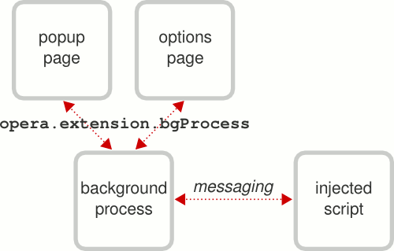

Accessing an Opera extension's background process
From Opera 15 onward, Opera 11 & 12’s extension format is no longer supported, and instead, we’ve switched to Chromium’s extension model. Check out our new documentation for developing extensions for Opera 15 and higher and start building your own extensions.
Introduction
One of the trickiest areas of building an Opera extension is messaging—sending information from one part of the extension to another. For example, you may want to execute some code in the background process whenever a pop up window is opened, which would involve communicating between the two parts. There is a comprehensive introduction to messaging already on Dev.Opera but it is a bit complicated for achieving simple communication tasks. In many cases, messaging could be avoided altogether thanks to the bgProcess object, which allows you to access data contained in an extension's background process from a script in a completely different part of the extension code via a clever shortcut system, as if it were present in that actual part of the code.
bgProcess in a nutshell
The concept is very simple—the window object of an extension's background process can be accessed through the opera.extension.bgProcess object. The main points to remember are:
- You can share variables and functions with an options page or a popup window.
- Both read and write access to
bgProcessis possible. - The
bgProcessobject is not accessible from injected scripts because of security restrictions.
The relationship between an extension's components and how you can communicate between them is shown in Figure 1.

Figure 1: The communication structure of an Opera extension.
bgProcess in practice
To illustrate when this could be useful and how easy it is to use, let's make an example extension. To follow good coding practice, we'll have our core code contained in the background process and access it from a popup window; we'll use the wonderfully simple Reddit API to get the latest headlines from Reddit's front page.
As usual, we start building an extension by creating two blank files, config.xml and index.html, both of which are in the extension's root folder. We will be using XMLHttpRequest to get data from Reddit so as well as the usual metadata in config.xml, we also need to include an <access> element to give the extension permission to access external sites.
<-- config.xml (in its most basic form) -->
<?xml version="1.0" encoding="utf-8"?>
<widget xmlns="http://www.w3.org/ns/widgets">
...
<access origin="http://reddit.com" subdomains="true"/>
</widget>Next we'll start scripting: the first thing to do is create a toolbar button to open the popup. This is done in the background script which we'll call background.js, and link to from index.html. The background script is also where we set the dimensions of the popup window, and it looks like so:
// scripts/background.js
// Set the properties of the button
var buttonProperties = {
disabled: false,
title: 'Reddit Headlines',
icon: 'images/icon_18.png',
popup: {
href: 'popup.html',
width: 600,
height: 400
}
};
// Create the button and add it to the toolbar
var button = opera.contexts.toolbar.createItem(buttonProperties);
opera.contexts.toolbar.addItem(button);Also in the background script we'll put the main function for fetching the external data, not forgetting error checks in case something goes wrong:
// scripts/background.js
function doXHR(url) {
// Try to get the contents of the URL
var response;
var xhr = new XMLHttpRequest();
xhr.open('GET', url, false);
xhr.onreadystatechange = function() {
if (this.readyState == 4) {
// Error check for fetching the URL
if (this.status == 200 && this.responseText) {
response = this.responseText;
} else {
opera.postError('EXTENSION ERROR: Can\'t read ' + url);
return false;
}
}
};
xhr.send();
return response;
}As you can see, we've referenced a file called popup.html so we need to create that as a blank HTML file. We can leave the body empty as we'll be generating content dynamically, but we do need to use JavaScript to achieve that, so let's use popup.html to link to another new file called popup.js. This is where we get to use the bgProcess object, which now contains our doXHR() function:
// scripts/popup.js
window.addEventListener('DOMContentLoaded', function() {
// Get the headlines from the background process
var redditText = opera.extension.bgProcess.doXHR('http://api.reddit.com/');
}, false);It's that easy! However, we now have to do something with the data we've fetched. Opera's support for JSON means we can convert the data (which comes from a JSON-formatted text file) into an object and loop through its contents. With each iteration we'll create a list item containing a story title from Reddit and a link to its page. At the end of the loop, we'll display the entire list inside the popup page:
// scripts/popup.js (appended to the above function)
// Stop if there's an error
try {
// Create a JSON object and get the array of stories within it
var redditObj = JSON.parse(redditText);
var stories = redditObj.data.children;
} catch(e) {
return;
}
// Create a list element and prepare variables for its items
var list = document.createElement('ol');
var story, item;
// Loop through the array of stories and add each one to the list
for (var i = 0, len = stories.length; i < len; i++) {
story = stories[i].data;
item = document.createElement('li');
item.innerHTML = '<a href="' + story.url + '">' + story.title + '</a>';
list.appendChild(item);
}
// Finally, show the list of stories
document.body.appendChild(list);Just show me the code!
Although it doesn't look pretty, the functionality is complete. You can download and run the example extension, and view all the code for the various pages and scripts below.
config.xml
<?xml version="1.0" encoding="utf-8"?>
<widget xmlns="http://www.w3.org/ns/widgets" id="RedditHeadlines" defaultlocale="en">
<name>Reddit Headlines</name>
<description xml:lang="en">Shows the latest headlines from reddit.com in a popup window.</description>
<author href="http://www.example.com/">[Your name here]</author>
<icon src="images/icon_64.png"/>
<icon src="images/icon_18.png"/>
<access origin="http://reddit.com/" subdomains="true"/>
</widget>index.html
<!DOCTYPE html>
<html lang="en">
<head>
<meta charset="utf-8">
<title>Reddit Headlines (background)</title>
</head>
<body>
<h1>Reddit Headlines (background)</h1>
<script src="scripts/background.js"></script>
</body>
</html>scripts/background.js
// Set the properties of the button
var buttonProperties = {
disabled: false,
title: 'Reddit Headlines',
icon: 'images/icon_18.png',
popup: {
href: 'popup.html',
width: 600,
height: 400
}
};
// Create the button and add it to the toolbar
var button = opera.contexts.toolbar.createItem(buttonProperties);
opera.contexts.toolbar.addItem(button);
function doXHR(url) {
// Try to get the contents of the URL
var response;
var xhr = new XMLHttpRequest();
xhr.open('GET', url, false);
xhr.onreadystatechange = function() {
if (this.readyState == 4) {
// Error check for fetching the URL
if (this.status == 200 && this.responseText) {
response = this.responseText;
} else {
opera.postError('EXTENSION ERROR: Can\'t read ' + url);
return false;
}
}
};
xhr.send();
return response;
}
popup.html
<!DOCTYPE html>
<html lang="en">
<head>
<meta charset="utf-8">
<title>Reddit Headlines</title>
</head>
<body>
<h1>Headlines from <a href="http://reddit.com/">reddit.com</a></h1>
<script src="scripts/popup.js"></script>
</body>
</html>scripts/popup.js
Note that I've added a loading message to the code below so the user knows something is happening.
window.addEventListener('DOMContentLoaded', function() {
// First, tell the user that something's happening
var loading = document.createElement('p');
loading.innerHTML = 'Loading...';
document.body.appendChild(loading);
// Get the headlines from the background process
var redditText = opera.extension.bgProcess.doXHR('http://api.reddit.com/');
// Stop if there's an error
try {
// Create a JSON object and get the array of stories within it
var redditObj = JSON.parse(redditText);
var stories = redditObj.data.children;
} catch(e) {
loading.innerHTML = 'Problem fetching the headlines';
return;
}
// Create a list element and prepare variables for its items
var list = document.createElement('ol');
var story, item;
// Loop through the array of stories and add each one to the list
for (var i = 0, len = stories.length; i < len; i++) {
story = stories[i].data;
item = document.createElement('li');
item.innerHTML = '<a href="' + story.url + '">' + story.title + '</a>';
list.appendChild(item);
}
// Finally, remove the loading message and show the list of headlines
document.body.removeChild(loading);
document.body.appendChild(list);
}, false);
Conclusion
As you can see, not having to use messaging has saved us considerable coding time and effort. Keep in mind that the bgProcess object can be accessed from an options page in exactly the same way: further enhancements to this extension could include an options page for the user to choose how many stories to display. Some CSS to nicely style the popup would also be a good idea. With that in place, this example is a good foundation for any sort of extension showing news, blog posts or other frequently updated stories. We'd love to see what you can make once you've submitted them to the Opera extensions repository. Happy coding!
This article is licensed under a Creative Commons Attribution-Noncommercial-Share Alike 3.0 Unported license.
Comments
The forum archive of this article is still available on My Opera.
-

Come on guys. Mention some info. about asynchronous Ajax request in the article instead of surreptitiously demonstrating it for synchronous request only. Got me really confused!!!
-

When I call some function in background process from popup (opera.extension.bgProcess.someFn() ) and the function access some global variable in the background process Opera throws NOT_SUPPORTED err, but there is no problem in google chrome .. might be good to change this behavior in Opera to same as Chrome has
-

Nevermind, I was doing something wrong .. it works fine :)
No new comments accepted.Vivek Malhotra
Saturday, May 26, 2012
Martin Kadlec
Sunday, June 17, 2012
Martin Kadlec
Sunday, June 17, 2012